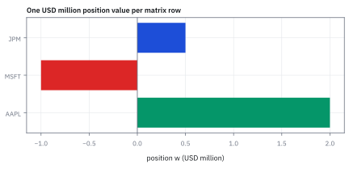

4.1 Filtrations and the Definition of a Martingale
Martingale คือกระบวนการที่ค่าเฉลี่ยของอนาคต เมื่อรู้ทุกอย่างถึงวันนี้แล้ว เท่ากับค่าของวันนี้พอดี
เกมโยนเหรียญ (สมมติ) เริ่มด้วยเงิน \$100 ออกหัวได้ \$10 ออกก้อยเสีย \$10 เหรียญยุติธรรมและแต่ละรอบไม่เกี่ยวกัน สามรอบแรกออก หัว หัว ก้อย ตอนนี้จึงมี \$110 หัวหน้า desk ถามสองข้อ: ถ้าเล่นต่ออีกสี่รอบ ควรคาดยอดเงินไว้ที่ \$100 ซึ่งเป็นทุนตั้งต้น หรือ \$110 ซึ่งมีอยู่ตอนนี้ และยอดจริงอาจไปได้ไกลแค่ไหน
ลองตอบก่อนเปิดเฉลย
คาดไว้ที่ \$110 ไม่ใช่ \$100 สามรอบที่ผ่านไปเป็นข้อเท็จจริงแล้ว ไม่ต้องเฉลี่ยใหม่ ส่วนสี่รอบข้างหน้าแต่ละรอบเฉลี่ยศูนย์ จึงไม่ขยับค่าเฉลี่ย แต่ยอดจริงจบได้ตั้งแต่ \$70 ถึง \$150 และโอกาสจบที่ \$110 พอดีมีแค่ 6 ใน 16 หรือ 37.5% ค่าเฉลี่ยที่ไม่ขยับจึงไม่ได้แปลว่าเงินไม่ขยับ
ภาพรวมก่อนลงสูตร
คำตอบ \$110 ใช้ความคิดสองข้อ ข้อแรก ข้อมูลสะสม: ณ รอบที่ 3 เรารู้ผลสามรอบแรกแล้วและจะไม่ลืม แต่ยังไม่รู้รอบที่ 4 ชุดข้อมูลที่โตขึ้นตามเวลาแบบนี้ชื่อ filtration ข้อสอง ค่าเฉลี่ยแบบมีเงื่อนไข: เฉลี่ยเฉพาะส่วนที่ยังไม่เปิด และถือส่วนที่เปิดแล้วเป็นตัวเลข
กระบวนการที่ค่าเฉลี่ยของก้าวถัดไป เมื่อรู้ข้อมูลถึงวันนี้ เท่ากับค่าวันนี้ ในทุกวันและทุกประวัติที่อาจเกิด เรียกว่า martingale มันคือแบบจำลองของ “เกมยุติธรรม” ถ้าค่าเฉลี่ยของก้าวถัดไปสูงกว่าค่าวันนี้เรียก submartingale ต่ำกว่าเรียก supermartingale
รูปด้านล่างคือทั้งหน้าในภาพเดียว ฝั่งซ้ายคืออดีตที่รู้แล้วเพียงเส้นเดียว ฝั่งขวาคืออนาคต 16 เส้นทางที่ยังเป็นไปได้ หน้านี้จะนิยาม filtration ตรวจ martingale ทีละก้าว ขยายเป็นหลายก้าวด้วย tower property ตรวจต้นไม้ราคาทุกโหนด แล้วจบที่เหตุผลว่าทำไมการตั้งราคา option ต้องหาความน่าจะเป็นชุดที่ทำให้ราคาหุ้นที่คิดลดแล้วเป็น martingale
รูป — อดีตหนึ่งเส้น อนาคตสิบหกเส้น ค่าเฉลี่ยอยู่ที่ค่าวันนี้
ศัพท์ที่ใช้ในหัวข้อนี้
- Filtration $(\mathcal F_n)$
- ข้อมูลทั้งหมดที่รู้ ณ เวลา $n$ ซึ่งโตขึ้นตามเวลาและไม่เคยหาย ใช้ตอบให้ชัดว่า “ณ ตอนตัดสินใจ รู้อะไรแล้วบ้าง”
- Adapted
- ค่า $X_n$ คำนวณได้จากข้อมูลถึงเวลา $n$ เท่านั้น ไม่แอบใช้อนาคต ใช้ตรวจว่า backtest ไม่มี look-ahead
- Conditional expectation $\mathbb E_n[Y]$
- ค่าเฉลี่ยของ $Y$ เมื่อรู้ข้อมูลถึงเวลา $n$ ผลลัพธ์ขึ้นกับประวัติที่เกิดจริง จึงเป็นตัวแปรสุ่มก่อนเห็นประวัตินั้น ใช้เป็นคำพยากรณ์ที่ทำให้ความคลาดเคลื่อนกำลังสองเฉลี่ยต่ำที่สุด
- Integrable
- $\mathbb E\big[|X_n|\big]$ มีค่าจำกัด คือขนาดเฉลี่ยของค่านั้นไม่ระเบิด ต้องมีก่อนค่าเฉลี่ยจะมีความหมาย
- Martingale
- กระบวนการที่ adapted, integrable และค่าเฉลี่ยของก้าวถัดไปเมื่อรู้ข้อมูลวันนี้เท่ากับค่าวันนี้ ใช้เป็นแบบจำลองของเกมยุติธรรม และของราคาที่คิดลดแล้วในการตั้งราคาอนุพันธ์
- Submartingale และ supermartingale
- ค่าเฉลี่ยของก้าวถัดไปไม่ต่ำกว่า (sub) หรือไม่สูงกว่า (super) ค่าวันนี้ ใช้บอกทิศของ drift ที่คาดได้ เช่นเกมที่โดนเก็บค่าธรรมเนียมเป็น supermartingale
- Risk-neutral probability $Q$
- ชุดความน่าจะเป็นที่ใช้ตั้งราคา ไม่ใช่โอกาสจริง เลือกให้ราคาที่คิดลดด้วยดอกเบี้ยแล้วเป็น martingale ใช้หาราคาอนุพันธ์เป็นค่าเฉลี่ยคิดลดของ payoff
สัญลักษณ์และหน่วย
| สัญลักษณ์ | ความหมาย | หน่วย |
|---|---|---|
| $n$ | รอบของเกม หรือวันซื้อขาย | รอบ |
| $C_i$ | ผลเหรียญรอบที่ $i$: $+1$ เมื่อหัว $-1$ เมื่อก้อย | ไม่มีหน่วย |
| $X_n$ | ยอดเงินหลังจบรอบที่ $n$ | ดอลลาร์ |
| $\mathcal F_n$ | ข้อมูลที่รู้หลังจบรอบที่ $n$ คือผล $C_1,\ldots,C_n$ | — |
| $\mathbb E_n[\,\cdot\,]$ | ค่าเฉลี่ยเมื่อรู้ $\mathcal F_n$ ย่อมาจาก $\mathbb E[\,\cdot\mid\mathcal F_n]$ | หน่วยเดียวกับสิ่งที่เฉลี่ย |
| $P$, $Q$ | ความน่าจะเป็นของโลกจริง และความน่าจะเป็นสำหรับตั้งราคา | ไม่มีหน่วย |
| $R$ | ตัวคูณดอกเบี้ยต่อหนึ่งงวด เช่น 1.0002 ต่อวัน | ไม่มีหน่วย |
ขั้นที่ 1 — ตกลงก่อนว่า ณ เวลา $n$ รู้อะไร
คำว่า “ค่าเฉลี่ยของอนาคต” ไม่มีความหมายจนกว่าจะบอกว่าตอนนี้รู้อะไรแล้ว ในเกมเหรียญ ข้อมูลหลังรอบที่ $n$ คือผล $C_1,\ldots,C_n$ ครบทุกตัว เราเรียกข้อมูลชุดนี้ว่า $\mathcal F_n$ และยอดเงินเขียนเป็นสูตรของผลเหล่านี้
บรรทัดแรกบอกว่า $X_n$ ใช้แค่ผลเหรียญถึงรอบที่ $n$ ไม่มี $C_{n+1}$ อยู่ในสูตร ค่า $X_n$ จึงรู้ได้ทันทีเมื่อจบรอบที่ $n$ สมบัตินี้ชื่อ adapted บรรทัดที่สองคือเส้นทางจริงของเรา หัว หัว ก้อย บรรทัดสุดท้ายเป็นแค่ชื่อย่อ เขียน $\mathbb E_n$ แทน “ค่าเฉลี่ยเมื่อรู้ข้อมูลถึงเวลา $n$” ซึ่งจะใช้ตลอดหน้านี้
ทำไมเรียก filtration รูปด้านล่างตอบได้ ก่อนโยนเหรียญ เส้นทางที่เป็นไปได้ทั้งแปดแบบ (สามรอบ) แยกกันไม่ออกเลย ทุกครั้งที่เปิดเหรียญ กลุ่มของเส้นทางที่ยังเป็นไปได้ถูกกรองให้เล็กลง ข้อมูลจึงโตขึ้นและไม่เคยหาย สิ่งที่รู้ ณ รอบที่ 2 ยังรู้อยู่ ณ รอบที่ 3 เสมอ แนวคิดเดียวกันใช้ในเวลาต่อเนื่องเป็น $\mathcal F_t$ ของ filtration ในเวลาต่อเนื่อง
รูป — ข้อมูลกรองเส้นทางที่เป็นไปได้ให้เล็กลงทุกรอบ
ขั้นที่ 2 — ค่าเฉลี่ยหนึ่งก้าว: แยกสิ่งที่รู้ออกจากสิ่งที่ยังสุ่ม
ตอนนี้ถามคำถามหลักทีละก้าว: ยืนอยู่ที่รอบ $n$ ค่าเฉลี่ยของยอดเงินรอบหน้าเป็นเท่าไร ยอดรอบหน้าคือยอดวันนี้บวกผลของเหรียญที่ยังไม่โยน
บรรทัดที่สองดึง $X_n$ ออกมานอกค่าเฉลี่ยตรง ๆ เพราะ ณ รอบ $n$ มันเป็นตัวเลขที่รู้แล้ว ท่านี้คือ taking out what is known ของ tower property (สิ่งที่รู้แล้วทำตัวเป็นค่าคงที่ภายในค่าเฉลี่ยแบบมีเงื่อนไข)
บรรทัดที่สามคือจุดที่ต้องหยุดดู เราเปลี่ยน $\mathbb E_n[C_{n+1}]$ เป็น $\mathbb E[C_{n+1}]$ ซึ่งทำได้เพราะเหรียญรอบหน้าไม่ขึ้นกับอดีต ประวัติจึงไม่เปลี่ยนโอกาสของมัน ถ้าเกมมี momentum เช่นหัวแล้วมีโอกาสหัวอีก 60% ขั้นนี้จะพังทันที เพราะ $\mathbb E_n[C_{n+1}]$ จะขึ้นกับผลรอบล่าสุด
ตรวจด้วยตัวเลขที่ยอด \$110: รอบหน้าเป็น \$120 หรือ \$100 อย่างละครึ่ง เฉลี่ย $\tfrac12(120)+\tfrac12(100)=110$ ทั้งสองค่าไม่ใช่ 110 แต่จุดสมดุลของมันคือ 110
ขั้นที่ 3 — นิยาม martingale ให้ครบสามข้อ
ผลหนึ่งก้าวที่เพิ่งได้คือหัวใจของนิยาม แต่ยังมีอีกสองเงื่อนไขที่คนมักลืม เราจึงเขียนนิยามให้ครบ: กระบวนการ $(X_n)$ เป็น martingale เทียบกับ filtration $(\mathcal F_n)$ และความน่าจะเป็น $P$ เมื่อ $X_n$ adapted และทุก $n$ ผ่านสองบรรทัดนี้
เงื่อนไขแรก (adapted ซึ่งเขียนเป็นคำ) ห้ามใช้อนาคต เงื่อนไขที่สอง (integrable) บอกว่าขนาดเฉลี่ยต้องจำกัด ไม่อย่างนั้นค่าเฉลี่ยแบบมีเงื่อนไขอาจไม่มีอยู่ เงื่อนไขที่สามคือไม่มี drift เมื่อรู้ข้อมูลวันนี้ ความน่าจะเป็น $P$ ต้องระบุด้วย เพราะกระบวนการเดียวกันอาจเป็น martingale ใต้ความน่าจะเป็นชุดหนึ่ง แต่ไม่เป็นใต้อีกชุด ซึ่งเป็นแก่นของการตั้งราคาในขั้นสุดท้าย
เกมเหรียญผ่านครบ: $X_n$ เป็นสูตรของ $C_1,\ldots,C_n$ และ $|X_n|\le100+10n$ จึงมีขนาดจำกัดแน่นอน ส่วนข้อสามคือการคำนวณหนึ่งก้าวที่เพิ่งทำ ถ้าเปลี่ยนเครื่องหมายเท่ากับเป็น $\ge$ ได้ submartingale เป็น $\le$ ได้ supermartingale และ martingale ก็คือกระบวนการที่เป็นทั้งสองแบบพร้อมกัน
บางตำราเขียนเงื่อนไขสุดท้ายเป็น $\mathbb E_n[X_{n+m}]=X_n$ สำหรับทุก $n$ และทุก $m\ge0$ เลย การเฉลี่ยซ้อนด้านล่างจะแสดงว่าสองแบบนี้คือนิยามเดียวกัน
ทำไมต้อง integrable: กราฟสมมาตรยังไม่พอ
ให้ $Y$ มี Cauchy density $f(y)=1/\big(\pi(1+y^2)\big)$ กราฟสมมาตรรอบศูนย์ ดูเหมือนค่าเฉลี่ยต้องเป็นศูนย์ แต่ขนาดเฉลี่ยไม่จำกัด
ส่วนบวกและส่วนลบของ $\mathbb E[Y]$ ต่างก็เป็นอนันต์ จึงหักกันเป็นศูนย์ไม่ได้ การตัดหางซ้ายขวาเท่ากันแล้วได้ศูนย์เป็นแค่การเลือกวิธีตัด ไม่ใช่ค่าเฉลี่ย ผลรวมของก้าวแบบ Cauchy จึงพิสูจน์ด้วย “บวกค่าเฉลี่ยศูนย์ทุกก้าว” ไม่ได้ (การแจกแจงหางหนาแบบนี้อยู่ใน สวนสัตว์ของการแจกแจง)
ขั้นที่ 4 — จากหนึ่งก้าวเป็นหลายก้าวด้วย tower property
คำถามเปิดถามล่วงหน้าสี่รอบ ไม่ใช่หนึ่งรอบ เราต่อหนึ่งก้าวเป็นหลายก้าวด้วยการเฉลี่ยซ้อน: เฉลี่ยด้วยข้อมูลที่มากกว่าก่อน แล้วเฉลี่ยผลนั้นด้วยข้อมูลที่น้อยกว่า
บรรทัดแรกใช้ tower property แบบข้อมูลซ้อน (เฉลี่ยคำพยากรณ์ที่ใช้ข้อมูลมาก ด้วยข้อมูลที่น้อยกว่า ได้คำพยากรณ์ของข้อมูลที่น้อยกว่า) ท่านี้ใช้ได้เพราะ filtration ไม่เคยลืม ทุกอย่างที่รู้ ณ รอบ $n$ ยังรู้ ณ รอบ $n+1$ บรรทัดที่สองใช้นิยามหนึ่งก้าวที่รอบ $n+1$ และบรรทัดที่สามใช้มันอีกครั้งที่รอบ $n$
ทำซ้ำ $m$ ครั้งได้บรรทัดที่สี่ คำถามเปิดจึงตอบได้ทันที: $\mathbb E_3[X_7]=X_3=110$ บรรทัดสุดท้ายได้จากการตั้ง $n=0$ แล้วเฉลี่ยอีกชั้น คือค่าเฉลี่ยก่อนเห็นอะไรเลยคงที่ตลอดเวลา
ทิศกลับไม่จริง ค่าเฉลี่ยรวมคงที่ทุกเวลายังไม่ทำให้เป็น martingale ตัวอย่าง: ให้ $Z$ เป็น $+1$ หรือ $-1$ อย่างละครึ่ง ตั้ง $X_0=0$, $X_1=Z$, $X_2=-Z$ ทุกเวลามีค่าเฉลี่ยศูนย์ แต่เมื่อเห็น $X_1=+1$ แล้วเรารู้แน่ว่า $X_2=-1$ จึงได้ $\mathbb E_1[X_2]=-X_1$ ไม่ใช่ $X_1$ รูปด้านล่างแสดงตัวอย่างนี้
รูป — ค่าเฉลี่ยรวมคงที่ แต่ไม่ใช่ martingale
ขั้นที่ 5 — ตรวจด้วยการนับทั้ง 16 เส้นทาง
สูตรบอกว่า $\mathbb E_3[X_7]=110$ ขั้นนี้นับตรง ๆ เพื่อให้เห็นว่าไม่ได้มีอะไรซ่อน
โจทย์ให้อะไรมาบ้าง: $X_3=110$ เหลือสี่รอบ แต่ละเส้นทางมีโอกาส $1/16$ ถ้าออกหัว $k$ ครั้งจากสี่ครั้ง ยอดสุดท้ายคือ $110+10k-10(4-k)=70+20k$ จำนวนเส้นทางที่ได้หัว $k$ ครั้งคือ $\binom4k$ ตาม binomial distribution
คำตอบ: ค่าเฉลี่ย 110 ตรงกับสูตร แต่ช่วงที่เป็นไปได้คือ 70 ถึง 150 และมีโอกาส 62.5% ที่ยอดจะไม่ใช่ 110
ตรวจเองใน 10 วินาที: ปลายทางเรียงสมมาตรรอบ 110 (70 คู่กับ 150 และ 90 คู่กับ 130 ด้วยน้ำหนักเท่ากัน) ค่าเฉลี่ยของการแจกแจงสมมาตรคือจุดกึ่งกลาง
ขั้นที่ 6 — เก็บค่าธรรมเนียมแล้วกลายเป็น supermartingale
เกมจริงไม่ค่อยยุติธรรม สมมติเจ้ามือเก็บค่าธรรมเนียม \$1 ทุกรอบ ยอดสุทธิ $Y_n=X_n-n$ ต้องถามใหม่ว่าค่าเฉลี่ยรอบหน้าอยู่ตรงไหน
ทุกก้าวคาดว่าจะลดลง \$1 จากที่ยืนอยู่ $Y_n$ จึงเป็น supermartingale ชื่ออาจดูกลับด้าน วิธีจำคือดูเครื่องหมาย supermartingale คือค่าวันนี้อยู่ “เหนือ” ค่าเฉลี่ยของพรุ่งนี้ ($Y_n\ge\mathbb E_n[Y_{n+1}]$) ส่วน submartingale คือค่าวันนี้อยู่ “ใต้”
สิ่งที่ต้องระวังคือ “คาดว่าจะลด” ไม่ได้แปลว่าลดทุกเส้นทาง รอบที่ออกหัวยังได้สุทธิ +\$9 การจัดประเภทดูที่ทิศของค่าเฉลี่ยแบบมีเงื่อนไข ไม่ได้ดูว่าเส้นหนึ่งจบสูงหรือต่ำ รูปถัดไปแสดงเรื่องนี้ด้วยเส้นทางสุ่มจำนวนมาก
รูป — drift บอกทิศของค่าเฉลี่ย ไม่ได้บังคับทุกเส้นทาง

ขั้นที่ 7 — ต้นไม้ราคาสองงวด: ต้องผ่านทุกโหนด
ในต้นไม้ราคา “ทุกประวัติ” คือทุกโหนด การผ่านที่โหนดแรกอย่างเดียวยังไม่พอ
โจทย์ให้อะไรมาบ้าง: ราคาเริ่ม \$100 แต่ละงวดคูณ $u=1.10$ หรือ $d=0.95$ ดอกเบี้ยศูนย์ ใช้โอกาสขึ้น $p$ เท่ากันทุกโหนด ต้องหา $p$ ที่ทำให้ตัวคูณเฉลี่ยเท่ากับ 1 แล้วตรวจทุกโหนด
คำตอบ: $p=1/3$ ผ่านครบสามโหนด เพราะตัวคูณเฉลี่ยเป็น 1 ทุกโหนด ค่าเฉลี่ยของงวดหน้าจึงเท่ากับราคาที่ยืนอยู่เสมอ
ทีนี้ลองเปลี่ยนเฉพาะโหนดบนเป็นคูณ 1.05 หรือ 0.95 โดยยังใช้ $p=1/3$ เดิม จะได้ $\tfrac13(115.5)+\tfrac23(104.5)\approx108.17$ ซึ่งไม่ใช่ 110 โหนดล่างยังผ่าน แต่ทั้งต้นไม้ไม่ผ่าน ถ้าจะให้โหนดบนผ่าน ต้องใช้ $p=(1-0.95)/(1.05-0.95)=1/2$ ที่โหนดนั้น โอกาสจึงต้องต่างกันไปตามโหนด กลับกัน ถ้าต้นไม้เดิมใช้ $p=1/2$ ที่โหนดบนจะได้ $\tfrac12(121)+\tfrac12(104.5)=112.75\gt110$ เป็น drift ขึ้น
ตรวจเองใน 10 วินาที: ถ้าตัวคูณเฉลี่ย $pu+(1-p)d$ เท่ากับ 1 ค่าเฉลี่ยของงวดหน้าคือราคาวันนี้คูณ 1 ไม่ว่าราคาวันนี้เป็นเท่าไร
รูป — ต้นไม้ราคาที่ผ่านการตรวจทุกโหนด
ขั้นที่ 8 — ราคาหุ้นไม่ใช่ martingale ใต้โอกาสจริง แต่ราคาที่คิดลดแล้วเป็นใต้ $Q$
ทำไมตลาดสนใจ martingale ขนาดนี้ เพราะการตั้งราคาอนุพันธ์ทั้งหมดยืนบนมัน ดูต้นไม้หนึ่งวันของกองทุน SPY (ตัวเลขสมมติ) ราคา \$570 พรุ่งนี้เป็น \$576 หรือ \$564 นักวิเคราะห์ให้โอกาสขึ้นจริง 0.55
บรรทัดแรกบอกว่าใต้โอกาสจริง $P$ ราคามี drift ขึ้น 60 เซนต์ ราคาหุ้นจึงเป็น submartingale ใต้ $P$ ซึ่งสมเหตุสมผล คนถือหุ้นต้องได้ผลตอบแทนชดเชยความเสี่ยง
บรรทัดที่สามคือท่าของการตั้งราคา: หาโอกาส $q$ ชุดใหม่ที่ทำให้ราคาวันนี้เท่ากับค่าเฉลี่ยของราคาพรุ่งนี้ หลังคิดลดด้วยดอกเบี้ย ใช้ $R=1.0002$ ต่อวัน (ดอกเบี้ยราว 5% ต่อปีหารด้วย 252 วันทำการ) จะได้ $q=0.5095$ ถ้าดอกเบี้ยเป็นศูนย์ $q$ จะเป็น $(570-564)/12=0.5$ พอดี ค่าเฉลี่ยใต้ $Q$ ของราคาพรุ่งนี้คือ 570.114 ซึ่งโตเท่าดอกเบี้ย พอหารด้วย $R$ ก็กลับมาเป็น 570 ราคาที่คิดลดแล้ว $S_n/R^n$ จึงเป็น martingale ใต้ $Q$ ส่วนราคาดิบ $S_n$ ไม่เป็น
ผลที่ได้คือสูตรราคาของทุกอย่างในต้นไม้: $S_0=\mathbb E^Q\big[S_n/R^n\big]$ และอนุพันธ์ที่จ่าย $C_n$ ตอนจบมีราคา $C_0=\mathbb E^Q[C_n]/R^n$ ซึ่งสร้างจริงใน การตั้งราคาบน binomial tree ทฤษฎีบทพื้นฐานของการตั้งราคาบอกว่า $Q$ ที่ให้ทุกโอกาสเป็นบวกแบบนี้มีอยู่ ก็ต่อเมื่อตลาดไม่มี arbitrage ถ้าหุ้นจ่ายปันผล ต้องบวกปันผลที่คิดลดแล้วเข้าไปด้วย (ปันผลในสูตรราคา) และราคา futures เป็น martingale ใต้ $Q$ โดยไม่ต้องคิดลด เพราะเข้าสัญญาไม่ต้องจ่ายเงิน (mark-to-market และ margin)
รูป — ราคาเดียวกัน ถ่วงสองแบบ ได้จุดสมดุลสองจุด
ความผิดที่ให้คำตอบผิดแบบเงียบ ๆ
คิดว่า martingale แปลว่าเสี่ยงน้อย: $\mathbb E_3[X_7]=110$ แต่ยอดจริงจบได้ 70 ถึง 150 ถ้าเริ่มนับจาก \$100 ใหม่แล้วเล่นสิบรอบ ช่วงคือ 0 ถึง 200 ค่าเฉลี่ยที่ไม่มี drift ไม่ได้บอกอะไรเรื่องความกว้าง ความกว้างต้องคำนวณแยก ซึ่ง หน้าถัดไป จะทำ
ตรวจแค่ค่าเฉลี่ยรวม: ตัวอย่าง $X_1=Z$, $X_2=-Z$ มีค่าเฉลี่ยรวมศูนย์ทุกเวลา แต่ $\mathbb E_1[X_2]=-X_1$ ห่างจาก $X_1$ ถึง 2 หน่วยในทุกเส้นทาง ต้องตรวจที่ทุกโหนด
แอบใช้ข้อมูลอนาคต: ตั้ง $Y_n=C_{n+1}$ ทุกเวลามี $\mathbb E[Y_n]=0$ แต่ ณ เวลา $n$ ยังไม่รู้ค่า $Y_n$ จึงไม่ adapted และไม่ใช่ martingale ใน backtest เรื่องเดียวกันเกิดเมื่อใช้ตัวเลขเศรษฐกิจฉบับแก้ไขภายหลัง แทนฉบับที่ประกาศจริง ณ วันตัดสินใจ ผลตอบแทนที่ได้จะดีเกินจริงแบบที่หาไม่เจอจากตัวเลขเอง
ลืมว่า martingale ใต้ความน่าจะเป็นไหน: ราคา SPY ในตัวอย่างคาดว่าจะเป็น 570.60 ใต้ $P$ แต่ 570 (หลังคิดลด) ใต้ $Q$ การเอาค่าเฉลี่ยใต้ $Q$ ไปใช้พยากรณ์ราคาจริงจะทิ้ง drift 60 เซนต์ต่อวันไปทั้งหมด และการเอาโอกาสจริงไปตั้งราคา option จะได้ราคาที่ถูก arbitrage ได้
ใช้ทำอะไรบนโต๊ะจริง
desk อนุพันธ์ใช้ martingale ทุกวัน: ราคาของ option คือค่าเฉลี่ยคิดลดของ payoff ใต้ $Q$ เพราะราคาที่คิดลดแล้วของทุกสินทรัพย์ต้องเป็น martingale ใต้ $Q$ ฝั่งงานวิจัยกลยุทธ์ใช้มันเป็นสมมติฐานตั้งต้นที่ต้องหักล้าง: ถ้าผลตอบแทนส่วนเกินเป็น martingale difference คือเฉลี่ยศูนย์เมื่อรู้ข้อมูลวันนี้ สัญญาณที่สร้างจากข้อมูลวันนี้จะทำกำไรเฉลี่ยไม่ได้ (ความมีประสิทธิภาพของตลาด) ส่วนฝั่ง backtest ใช้คำว่า adapted เป็นกฎเหล็ก ทุกสัญญาณต้องคำนวณได้จากข้อมูลที่มี ณ เวลานั้นจริง
โจทย์ตรวจความเข้าใจ
1. เกมเหรียญเดิมมียอด \$80 หลังรอบที่ 6 ควรคาดยอดหลังรอบที่ 10 เท่าไร และถ้าเก็บค่าธรรมเนียมรอบละ \$1 ในสี่รอบข้างหน้าล่ะ
เฉลย
ไม่มีค่าธรรมเนียม ยอดเป็น martingale จึงคาด $\mathbb E_6[X_{10}]=X_6=80$ ดอลลาร์ จาก tower property ที่ต่อหนึ่งก้าวเป็นสี่ก้าว ถ้ามีค่าธรรมเนียม แต่ละรอบคาดว่าลด \$1 สี่รอบจึงคาด $80-4=76$ ดอลลาร์ ยอดสุทธิเป็น supermartingale
2. ตั้ง $Y_n=C_{n+1}$ โดยใช้ข้อมูล $\mathcal F_n$ เดิม ทุกเวลามี $\mathbb E[Y_n]=0$ และค่าเฉลี่ยรวมคงที่ ทำไม $Y_n$ ไม่ใช่ martingale
เฉลย
ไม่ adapted ณ เวลา $n$ เรายังไม่รู้ผลเหรียญรอบ $n+1$ จึงยังไม่รู้ $Y_n$ เงื่อนไขข้อแรกของนิยามพังตั้งแต่ต้น ค่าเฉลี่ยรวมที่คงที่ไม่ช่วยอะไร เพราะเป็นแค่ผลที่ตามมาของ martingale ไม่ใช่นิยาม
3. ราคา \$100 พรุ่งนี้เป็น \$120 หรือ \$90 ดอกเบี้ยศูนย์ ต้องใช้โอกาสขึ้นเท่าไรจึงผ่านก้าวแรก ถ้างวดถัดไปจากโหนด 120 เป็น 144 หรือ 108 ด้วยโอกาสเดิม โหนดนั้นผ่านไหม
เฉลย
$120p+90(1-p)=100$ ได้ $30p=10$ จึง $p=1/3$ ที่โหนด 120 ได้ $\tfrac13(144)+\tfrac23(108)=48+72=120$ ผ่าน เพราะตัวคูณ $1.2$ กับ $0.9$ เหมือนงวดแรก ตัวคูณเฉลี่ย $\tfrac13(1.2)+\tfrac23(0.9)=1$ จึงใช้ได้ทุกโหนด
คำนวณซ้ำด้วย JavaScript
โค้ดไล่ครบ 16 เส้นทางของสี่รอบ ตรวจต้นไม้ราคาทุกโหนด และหา $q$ ของต้นไม้ SPY
เปิดดูโค้ด
const near = (a, b, eps = 1e-9) => {
if (Math.abs(a - b) > eps) throw new Error(`${a} != ${b}`);
};
// coin game: X3 = 110, enumerate the 16 futures
let sum = 0, at110 = 0, lo = Infinity, hi = -Infinity;
for (let mask = 0; mask < 16; mask++) {
let x = 110;
for (let k = 0; k < 4; k++) x += (mask & (1 << k)) ? 10 : -10;
sum += x; if (x === 110) at110++;
lo = Math.min(lo, x); hi = Math.max(hi, x);
}
near(sum / 16, 110); near(at110 / 16, 0.375);
console.log({mean: sum / 16, lo, hi, pAt110: at110 / 16});
// two-period tree u = 1.10, d = 0.95, zero rate
const p = (1 - 0.95) / (1.10 - 0.95); // 1/3
for (const s of [100, 110, 95]) near(p * 1.10 * s + (1 - p) * 0.95 * s, s);
console.log('upper node, 1.05/0.95:', p * 115.5 + (1 - p) * 104.5); // 108.17
console.log('p = 1/2 on original tree:', 0.5 * 121 + 0.5 * 104.5); // 112.75
// SPY one-day tree
const R = 1.0002, q = (570 * R - 564) / (576 - 564);
console.log({meanP: 0.55 * 576 + 0.45 * 564, q,
discountedQ: (q * 576 + (1 - q) * 564) / R}); // 570.6, 0.5095, 570สิ่งที่ควรตอบได้หลังอ่าน
- บอกได้ว่า ณ เวลา $n$ รู้อะไรแล้ว (filtration) และค่าของกระบวนการคำนวณได้จากข้อมูลนั้นหรือไม่ (adapted)
- Martingale ต้อง adapted, integrable และ $\mathbb E_n[X_{n+1}]=X_n$ ในทุกโหนด ค่าเฉลี่ยรวมคงที่อย่างเดียวไม่พอ
- tower property ต่อหนึ่งก้าวเป็นหลายก้าว จึงได้ $\mathbb E_3[X_7]=110$ ทั้งที่ยอดจริงจบได้ 70 ถึง 150
- เกมที่เก็บค่าธรรมเนียมเป็น supermartingale ส่วนต้นไม้ราคาเป็น martingale เมื่อตัวคูณเฉลี่ยเท่ากับ 1 ทุกโหนด
- ราคาหุ้นมี drift ใต้โอกาสจริง แต่ราคาที่คิดลดแล้วเป็น martingale ใต้ $Q$ ซึ่งทำให้ราคาอนุพันธ์คือค่าเฉลี่ยคิดลดของ payoff
หน้าถัดไป สร้าง martingale จาก random walk จะทำสิ่งที่ตรงข้ามกับการตรวจ: เริ่มจากกำไรสะสมที่มี drift แล้วหักส่วนที่คาดได้ออกจนเหลือ martingale จากนั้นวัดว่าส่วนที่เหลือใหญ่แค่ไหนเมื่อเทียบกับความผันผวน